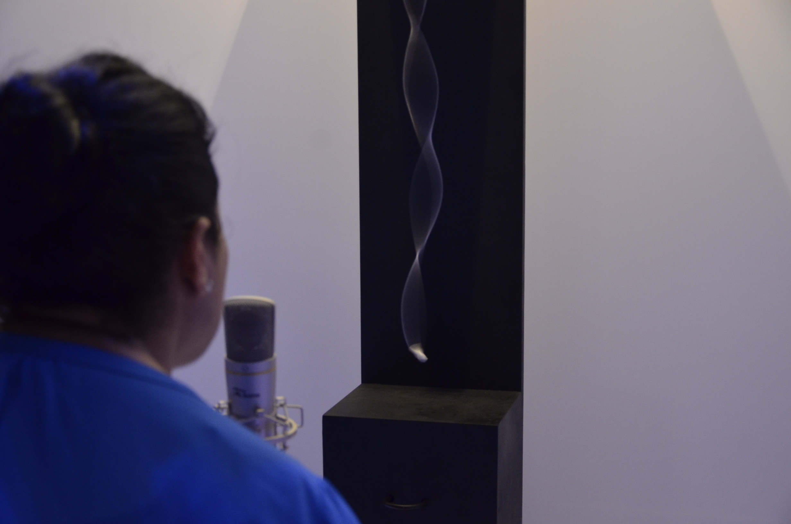
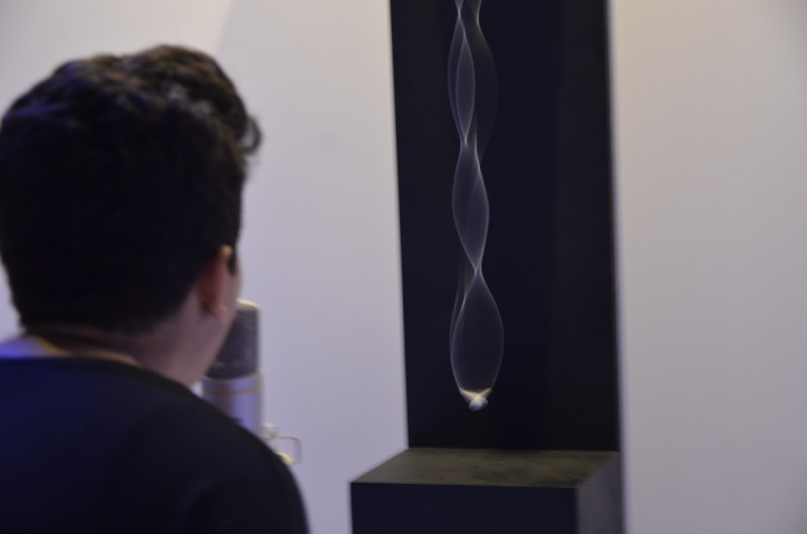

Larynx is an interective installation that visualizes human's voice. As a person speaks to the microphone, a string attached to a motor generates a wave that reflects the frequency of human's voice. This piece of work was shortlisted for The Sheikha Manal Young Artist Award 2016, and exhibited in Dubai.
Larynx is supported with Raspberry Pi and the sound analysis is carried out by Python.